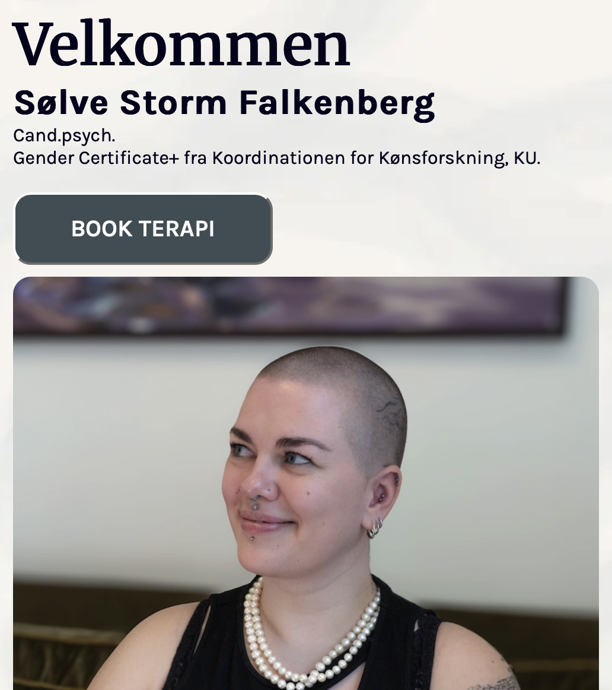
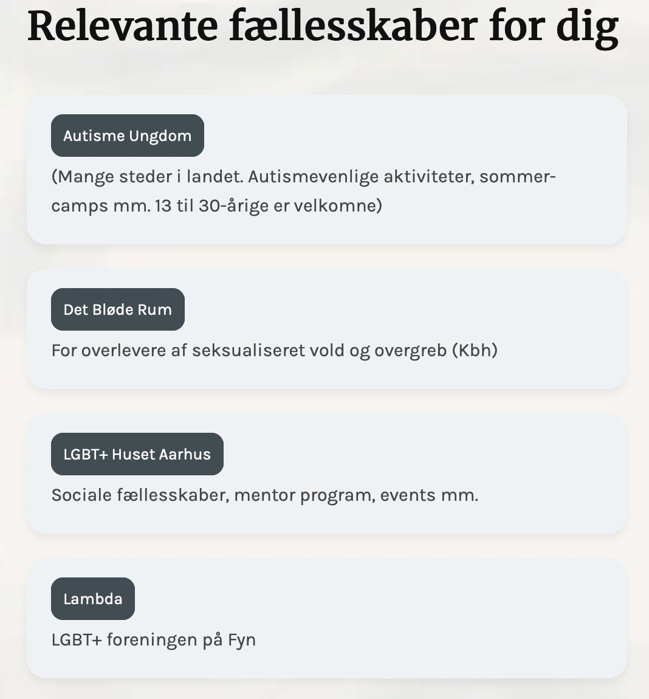

Virkomhedssite
I denne opgave har jeg arbejdet med at re-designe en eksisterende hjemmeside for en psykolog. Jeg har lært, hvordan man arbejder med brugeroplevelse og målgruppens behov, og hvordan designvalg som farver, typografi og layout kan påvirke stemningen og kommunikationen på en side. Jeg har desuden styrket mine færdigheder i både design og kodning – fra research og wireframes til færdigt responsivt website. Det har været en god øvelse i at samarbejde, tage højde for en rigtig kunde og finde balancen mellem æstetik og funktionalitet.
Tryk her for at komme videre til hjemmesiden

